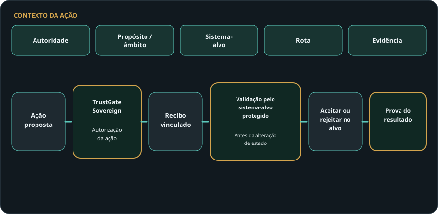
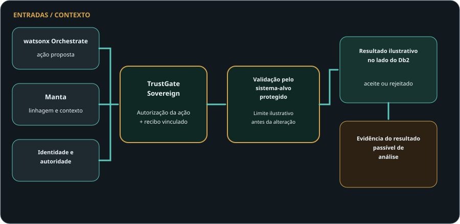
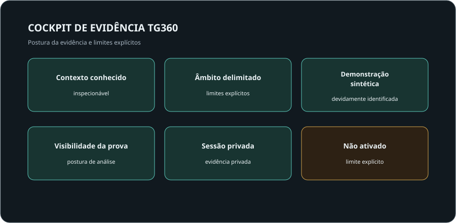

Governação da implementação
Este serviço de IA pode operar?
TrustGate Sovereign
A IA está a passar da recomendação para a ação. A TrustGate avalia se uma ação consequente específica pode prosseguir, vincula a decisão a um recibo de autorização e fornece ao sistema-alvo protegido a evidência necessária para validar essa autorização antes de aceitar uma alteração.
Uma implementação governada e uma plataforma governada não autorizam automaticamente uma ação específica.

Uma decisão, por si só, não constitui autoridade de execução. O sistema-alvo protegido valida a autorização da TrustGate antes de alterar o seu estado.
Demonstrado através de um percurso de referência local e delimitado. Não é reivindicada aplicação em produção, implementação num cliente, garantia de segurança entre processos ou não contornabilidade a nível empresarial.
A lacuna
A maior parte das conversas sobre controlo de IA fica em implantações, plataformas, modelos, ferramentas, workflows, logs ou auditorias. Esses controlos importam. Mas não são o mesmo que autorizar uma ação específica antes de ela avançar.
Este serviço de IA pode operar?
O ambiente agêntico está governado?
Esta ação específica pode prosseguir?
O sistema-alvo valida a autorização exata antes de aceitar a alteração?
Um aeroporto governado não significa que todos os voos possam descolar. Um voo autorizado continua a necessitar de validação da sua autorização antes de entrar na pista protegida.
Principal → Controlo → Prova
A TrustGate Sovereign liga o principal responsável e o propósito a uma ação específica, sistema-alvo, rota, evidência, impacto, política, autorização, recibo, validação do sistema-alvo e prova do resultado.
O modelo público é intencionalmente de alto nível. As demonstrações privadas mostram o padrão de evidência sem expor os mecanismos internos da prova.
Autorização protegida
A TrustGate autoriza uma ação específica e vincula a decisão a evidência. Um sistema-alvo protegido pode então validar que a autorização corresponde à ação, ao alvo e ao contexto atual antes de aceitar uma alteração. Uma autorização inválida, alterada, reutilizada ou desatualizada é rejeitada antes de o sistema-alvo mudar.
Demonstrado através de um percurso de referência local e delimitado. Não é reivindicada aplicação em produção, implementação num cliente, garantia de segurança entre processos ou não contornabilidade a nível empresarial.
Cenário ilustrativo de trabalho
O watsonx Orchestrate pode propor uma ação e o Manta pode fornecer linhagem e contexto. A TrustGate Sovereign avalia a ação específica e vincula a autorização a um recibo. Um limite ilustrativo de sistema-alvo protegido valida depois a autorização antes de um resultado ilustrativo no lado do Db2 ser aceite ou rejeitado e preservado como evidência passível de revisão.
O mesmo padrão arquitetural não se limita a esta stack. Outros ambientes de orquestração — por exemplo, LangGraph, Microsoft Copilot Studio ou Amazon Bedrock AgentCore —, juntamente com outros sistemas de linhagem, catálogo, governação, dados, aplicações ou APIs, podem ocupar os papéis correspondentes. O TrustGate Sovereign foi concebido em torno do padrão de controlo da execução, e não de uma única stack de fornecedor.

Exemplo ilustrativo de arquitetura empresarial. As funções arquiteturais podem ser desempenhadas por outras tecnologias empresariais. Não é reivindicada qualquer integração ativa, certificada, suportada, recomendada, de produção ou de parceria.
TG360
O TG360 apresenta a cadeia de evidência local aceite, desde a autorização da ação até à validação do recibo e ao resultado no sistema-alvo protegido. Apresenta evidência; não se torna um segundo motor de decisão.
O TG360 também mostra se o sistema-alvo de referência delimitado foi alterado ou permaneceu inalterado após a ação aceite ou rejeitada.

Superfícies TGSG
TrustGate Sovereign foi concebido para tornar várias superfícies de confiança inspecionáveis em revisão privada: confiança de ferramentas e capacidades, autoridade de conhecimento e recuperação, integridade de conteúdos e documentos, limites de workflow e autonomia, envelopes de orçamento e latência, e proveniência multiagente.
Que ferramentas e capacidades estão no âmbito da ação pedida?
Que fontes de conhecimento e rotas de recuperação são suficientes para esta ação?
Que estado de conteúdos ou documentos suporta o ponto de decisão?
Onde é que o workflow para, escala ou exige revisão?
Que envelope operacional é aceitável antes da execução?
Que passos agênticos levaram à ação pedida?
Estas superfícies são descritas publicamente apenas ao nível de categoria. Detalhes internos de implementação permanecem privados.
Porquê adotar
TrustGate Sovereign ajuda líderes a raciocinar sobre autoridade de ação, risco, escalonamento e prova antes de a IA agêntica ser confiada com trabalho material. O valor depende do ambiente do cliente, âmbito, linha de base e modelo operativo.
Clarificar onde a IA agêntica pode agir e onde tem de pausar.
Tornar o risco da ação mais fácil de inspecionar antes da execução.
Definir quando revisão, manter ou escalonar é o resultado correto.
Ligar autoridade, rota, evidência e resultado numa postura de revisão.
Preparar evidência ao nível da ação para análise posterior de controlo e garantia.
Apoiar governação de movimento material antes do compromisso.
Demonstrar que o sistema-alvo valida a autorização antes de aceitar uma alteração consequente.
Preservar evidência ao nível da ação para análise de controlo, análise de falhas e testes de resiliência.
Risco e resiliência
A TrustGate apoia evidência de controlo orientada para DORA. Não determina, por si só, a conformidade regulamentar.
Quem solicitou, aprovou e assumiu responsabilidade pela ação?
Que sistema-alvo, rota, evidência, impacto e contexto atual foram avaliados?
Que ferramenta, API, fornecedor ou rota de workflow esteve envolvida?
Que decisão, motivo, recibo e resultado no sistema-alvo foram registados?
É possível demonstrar que autorizações inválidas, alteradas, reutilizadas ou desatualizadas foram rejeitadas antes da alteração de estado?
Sessão privada
As demonstrações privadas podem abranger contexto de autorização da ação, evidência do recibo e do resultado, o princípio de validação pelo sistema-alvo protegido, cenários sintéticos de referência aceites e rejeitados, o cockpit de evidência TG360, evidência de controlo orientada para DORA, a perspetiva de responsabilização em proteção de dados, funções de arquitetura empresarial e análise dos limites das reivindicações.
Sistemas relacionados
TrustGate Sovereign lidera esta página. Os sistemas relacionados permanecem secundários e suportam a mesma disciplina orientada por evidência.
Fatia técnica local de prova para certificação de ações antes da execução e preservação de prova.
Pacotes de evidência de responsabilidade sobre dados de treino para revisão por DPO, jurídico, risco, CISO e auditoria.
Evidência de revisão de simulação de engenharia para comparação baseline-vs-variante.
Divulgação controlada
A página pública mostra o padrão de valor e a postura de análise. Parte da prova pertence a uma sessão privada, não a uma página pública. As demonstrações privadas mostram padrões de evidência, contexto TG360 e funções arquiteturais, enquanto os detalhes de implementação permanecem privados.
Sessão privada
Utilize esta área em conversas com responsáveis de risco, líderes de resiliência operacional, EPD/DPO e privacidade, CISO, CIO, responsáveis de governação de IA, auditoria interna, arquitetura empresarial, governação técnica e adoção executiva.